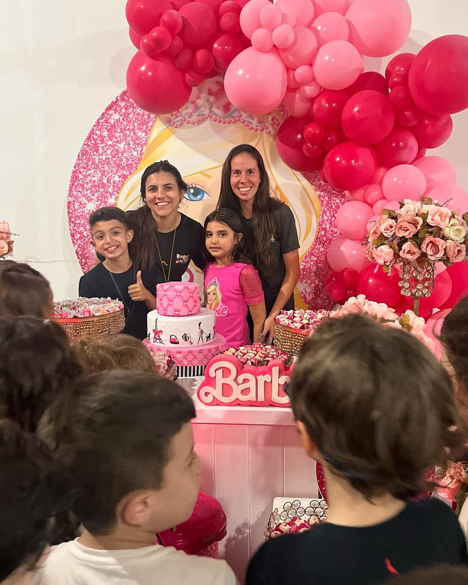

Alegria de Pular
Garanta sua diversão e faça parte das nossas atividades
recreativas.
Ideal para as crianças se divertirem e explorarem sua criatividade.
Com uma variedade de brinquedos, atividades lúdicas e um ambiente
seguro, oferecendo momentos de alegria e interação.
Nós vamos até você! Seja em sua casa, jardim, salão de festas ou em
qualquer outro local de sua preferência, estamos prontos para criar
um ambiente mágico e seguro para que os pequenos brinquem e
aprendam. Então, se você procura uma experiência de festa única e
memorável, você já sabe: Alegria De Pular é a escolha certa.



Nossos serviços


 Espaço Kids
Espaço Kids
Oficina de massinha
Uma atividade divertida e criativa, onde as crianças podem
explorar a imaginação criando formas e personagens com
massinha colorida. A oficina estimula a coordenação motora e a
expressão artística.
Esculturas de gesso
Os pequenos terão a oportunidade de fazer esculturas em gesso,
moldando figuras e decorando-as com pintura. Uma experiência
única para explorar texturas e cores, levando para casa suas
próprias obras de arte.
Pinturas faciais
Transforme-se em um personagem! Com tintas seguras e à base de
água, as crianças podem escolher desenhos coloridos para o
rosto, ganhando asas de borboleta, máscara de super-herói, e
muito mais.
Bexigas personalizadas
Um serviço de criação de bexigas customizadas com temas
divertidos. Seja com o nome da criança ou com figuras únicas,
as bexigas trazem um toque especial para o evento.
Bolha de sabão gigante
Fascinante e lúdico, o show de bolhas gigantes encanta
crianças e adultos, criando um espetáculo visual com bolhas
que podem ser interativas.
Caça ao tesouro
Uma aventura guiada com mapas e pistas para encontrar um
“tesouro” escondido. Perfeita para estimular a curiosidade,
trabalho em equipe e espírito explorador dos pequenos.
Circuito
Atividade física e divertida com obstáculos e desafios em um
circuito projetado para todas as idades. Promove a agilidade e
a diversão em um ambiente seguro e supervisionado.
Gincana
Jogos e desafios em grupo que incentivam a cooperação e o
espírito de equipe. Uma forma dinâmica de garantir a diversão
e a interação entre as crianças.
Diversas brincadeiras
Uma variedade de jogos e atividades tradicionais e modernos
que garantem a diversão contínua, criando momentos de risadas
e novas amizades.
O espaço Kids é aquele cantinho que tem todos os brinquedos, livros
e acessórios para as crianças brincarem. O objetivo do ambiente é de
estimular o desenvolvimento criativo e cognitivo dos pequenos, além
de ser uma ótima opção para entretêlos.


Tia Pipoca
Sou a Débora Cazaroto dos Reis, mas muitos me conhece como Tia pipoca
e Dedé. Sou Kidcoach, Analista de Mapeamento de Perfil Comportamental
- Profiler, graduanda em pedagogia e babá. Tenho 23 anos e sou CEO da
Alegrias de Pular desde 2021. Trabalho desde 2017 com crianças, e o
meu talento em recreação foi descoberto após a pandemia quando, no
condomínio em que atuo desde os 16 anos de idade, fechou a área de
lazer temporário, e as crianças não tinham mais onde brincar, então, a
partir disso, que comecei a passar de casa em casa para podermos
brincar em ruas. Até que uma mãe, interessada no meu serviço, me
convidou a fazer recreação em dias fixos, e através deste convite a
recreação faz parte da minha vida.
Tia Paçoca
Sou Marina Venezuela El Takche. Formada em
Pedagogia e cursando pós-graduação em
Psicopedagogia.
Atuo como professora em um Colégio em São
José do Rio Preto.
Desde 2015 trabalho com recreação em Buffet
infantil, sendo que em 2021, aos 20 anos de
idade abri minha própria empresa, denominada
Alegria de Pular, onde também sou conhecida
como tia Paçoca.
Trabalhar com entretenimento em eventos é a
minha maior alegria, realizar sonhos e memórias
em forma de brincadeiras, dando segurança e
conforto em um dia tão importante.